O bity é um app para controlar o seu dinheiro: bancos, cartões e faturas, compras parceladas, cofrinhos e para onde vai cada real do mês. Este guia leva uns 15 minutos para deixar tudo pronto.
No celular, abra este endereço no Chrome:
Abrir o bityhttps://g4vo-dev.github.io/bity/Se te mandaram um arquivo .apk, dá para instalar por ele também. O Android vai pedir para liberar "instalar apps desconhecidos" só desta vez.
Use sempre o mesmo jeito de abrir (o ícone). O app aberto pelo navegador e o app instalado guardam os dados no mesmo lugar, mas outro navegador (Samsung Internet, Firefox) tem os dados separados.
Na primeira vez, o app abre com dados inventados para você ver como fica tudo preenchido. Explore à vontade e depois:
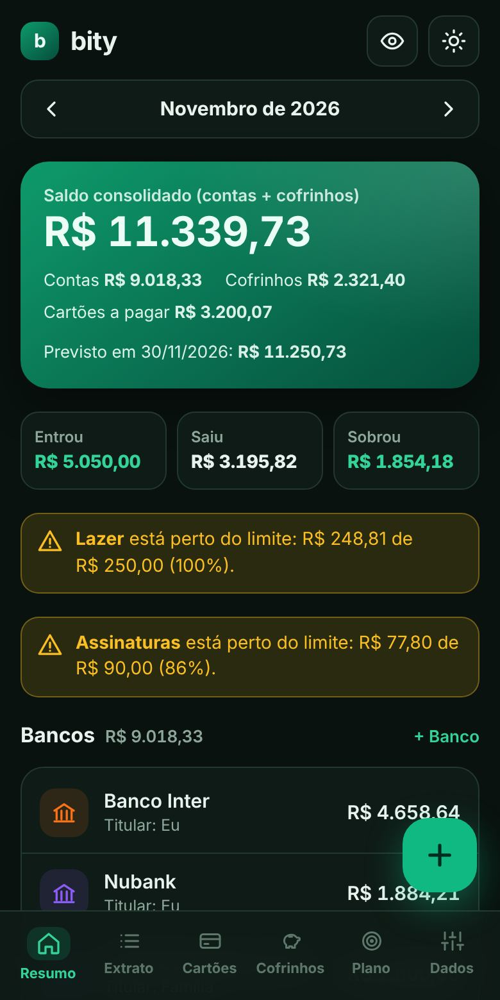
Não precisa lançar o passado. Comece de hoje com o saldo de hoje.
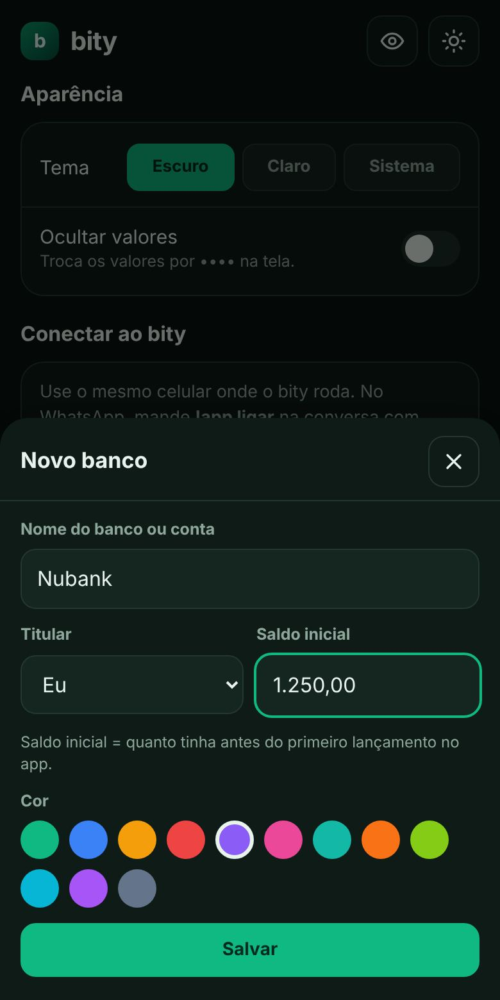
Com o dia de fechamento certo, o app coloca cada compra na fatura certa, igual ao app do banco.
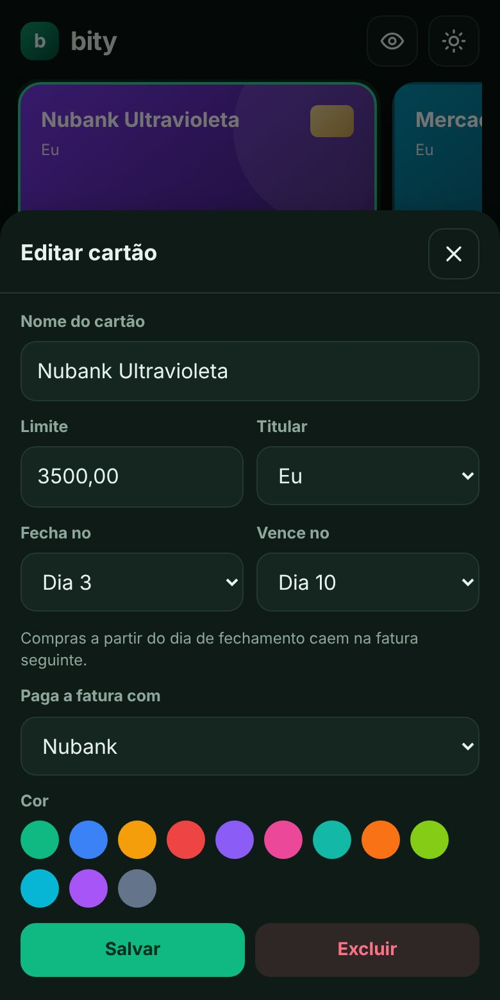
Conta que ainda vai vencer? Coloque a data do vencimento. Ela aparece como Agendado e só mexe no saldo quando o dia chegar.
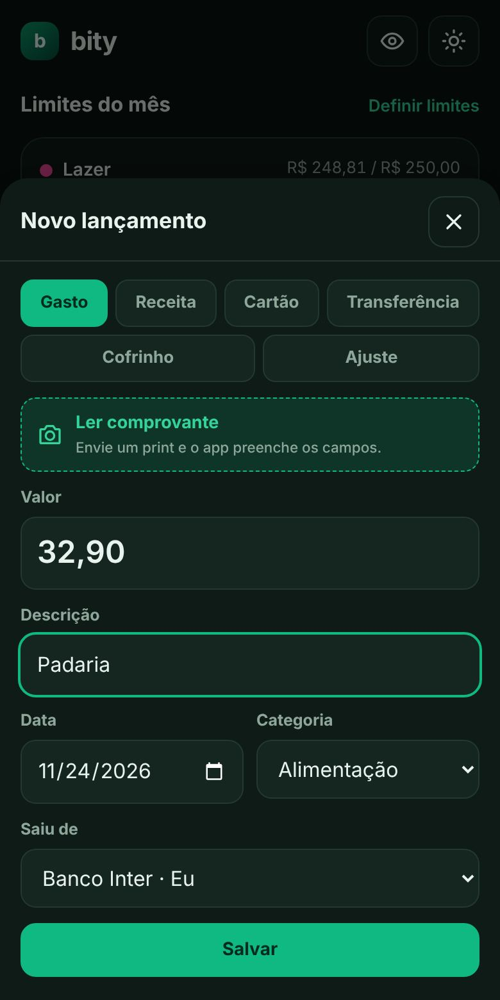
Use + → Transferência, escolha "de" e "para". Vira uma linha só e não conta como gasto nem como receita.
Não lance como gasto num banco e receita no outro: o resumo do mês ficaria errado.
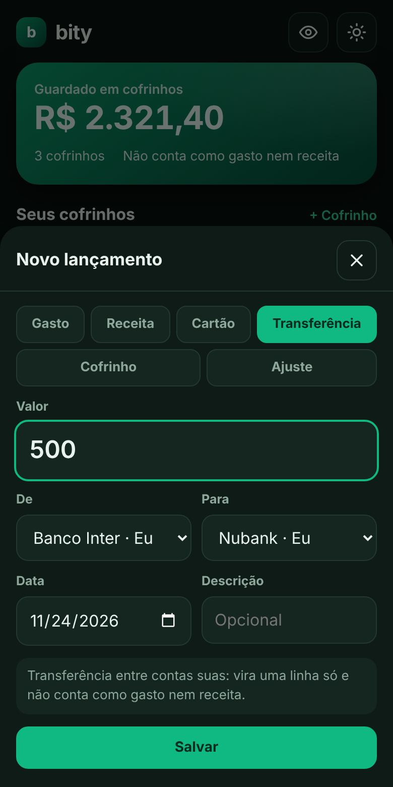
As setas ‹ › trocam o mês.
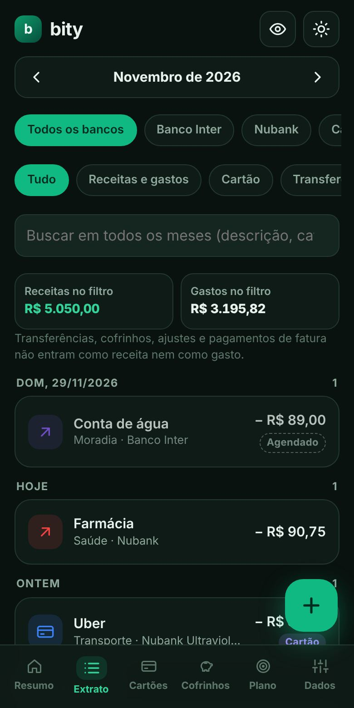
Acontece: uma tarifa, um rendimento, algo que você esqueceu. No Extrato, toque no banco e depois em Ajustar saldo. Digite o saldo que aparece no app do banco e o bity calcula a diferença sozinho.
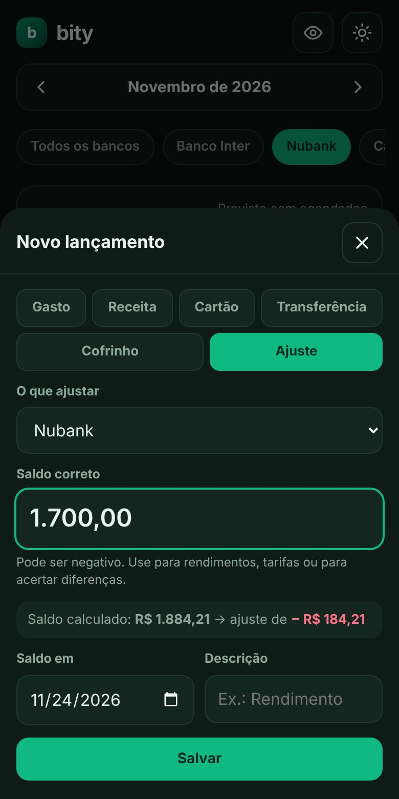
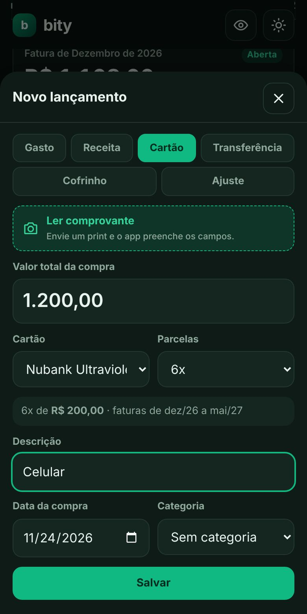
A barra de limite mostra em vermelho o que está usado (somando as parcelas futuras) e em verde o que sobra.
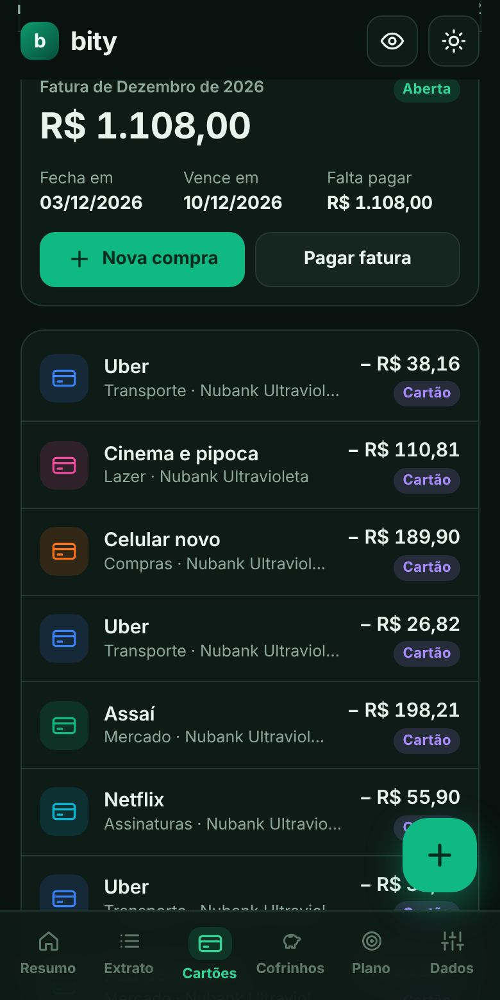
Seu banco tem cofrinho que vira limite do cartão (como Mercado Pago ou PicPay)? Escolha esse tipo e o cartão: o que você guardar soma no limite disponível dele.
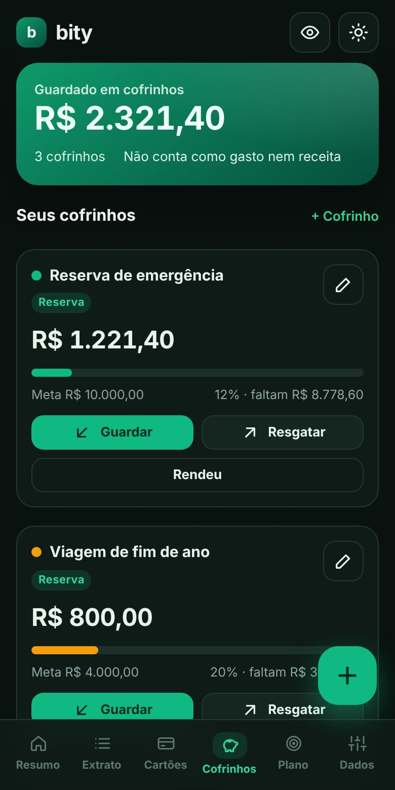
O olho lá em cima esconde todos os valores, para abrir o app perto de outras pessoas. O sol/lua troca o tema.
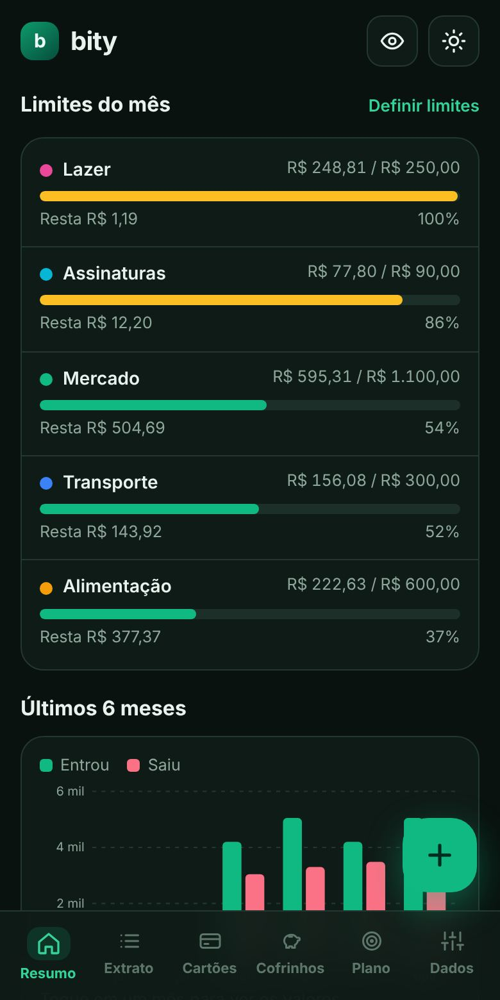
Para recuperar (celular novo, por exemplo): instale o app de novo e vá em Dados → Restaurar backup e escolha o arquivo.
Exportar lançamentos (CSV) gera uma planilha que abre no Excel ou no Google Planilhas.
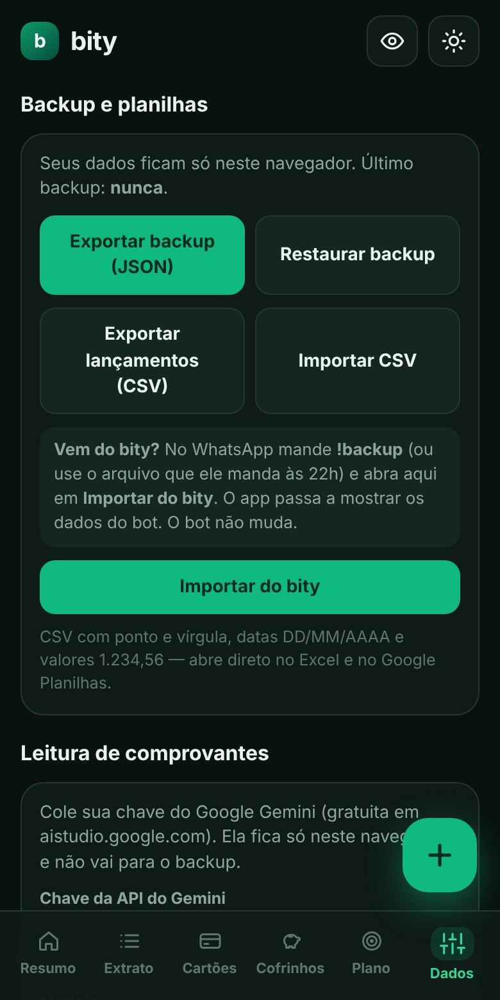
É para quem usa o robô do bity no WhatsApp. Se você não usa, pode ignorar essas duas partes.
No Extrato, toque no lançamento, troque o tipo lá em cima para Cartão, escolha o cartão e salve.
Toque em qualquer parcela no Extrato ou na fatura, corrija as parcelas e salve. O app refaz todas.
Manda um print de Pix ou cupom e o app preenche o lançamento. Precisa de uma chave gratuita do Google Gemini colada em Dados. É opcional: tudo funciona sem isso.
Você tocou no olho lá em cima. Toque de novo para mostrar.
Você provavelmente abriu por outro navegador ou outro caminho. Abra pelo ícone do app. Se os dados foram apagados, use Restaurar backup com o último arquivo.
Guia do bity · versão do app de novembro de 2026